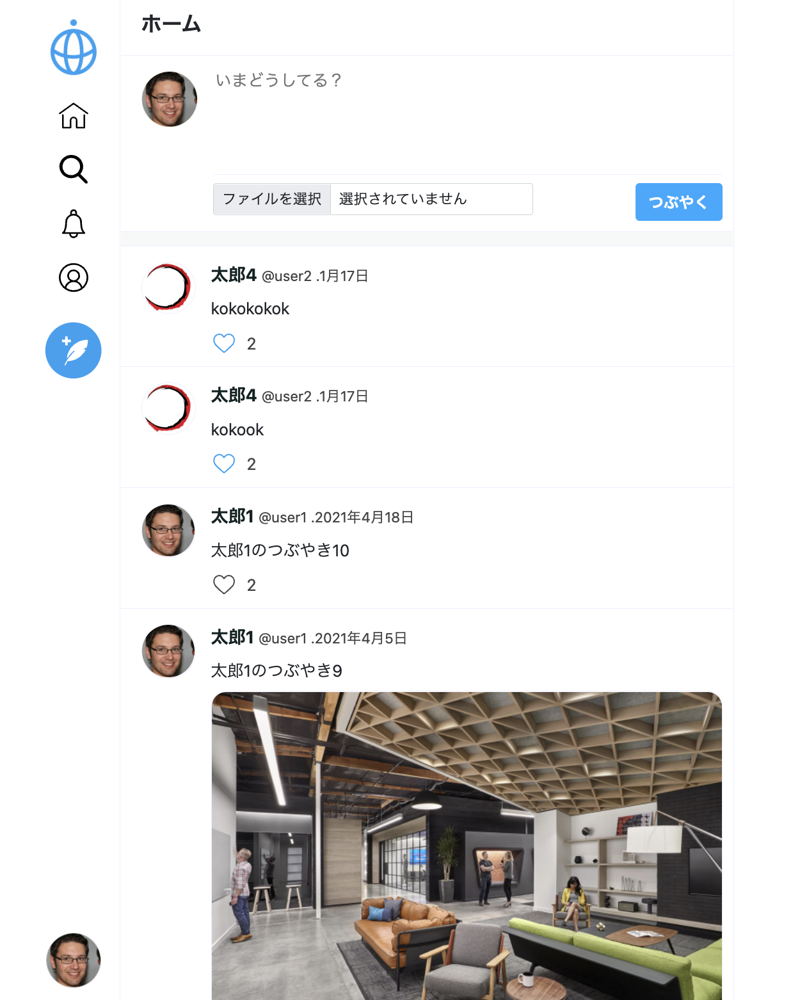

Twitter Clone
Twitterを元に作成したアプリです。
会員登録機能/ログイン機能/ツイートを投稿する機能/
他ユーザーをフォローする機能/他ユーザーからフォローされる機能
/いいね機能/自分自身のプロフィールを編集し更新する機能があります。
プロフィール編集とツイート投稿の際は画像のアップロードか可能です。
この開発では、PHP/MySQL/HTML/CSS/JavaScriptの5言語を使用しています。
＜ログイン用＞
メールアドレス： test1@example.com
パスワード： password1